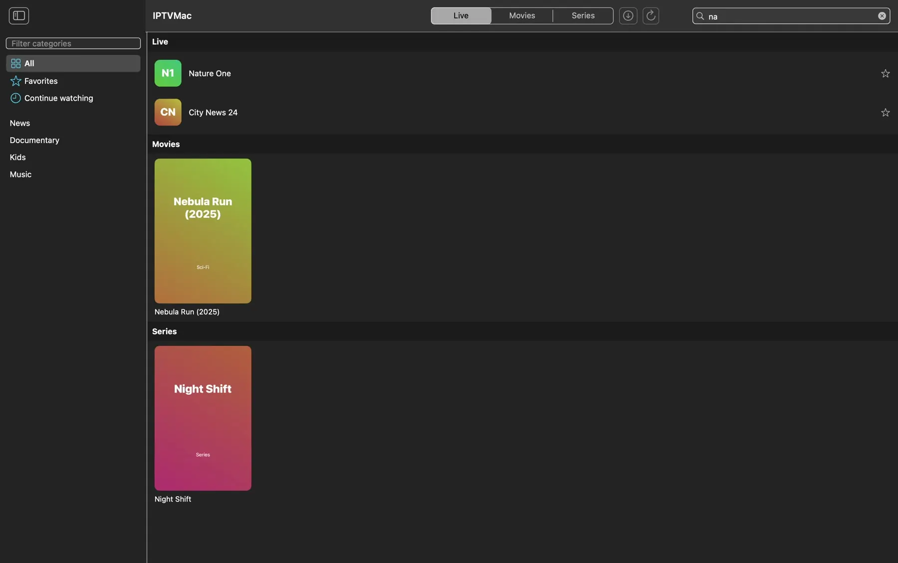
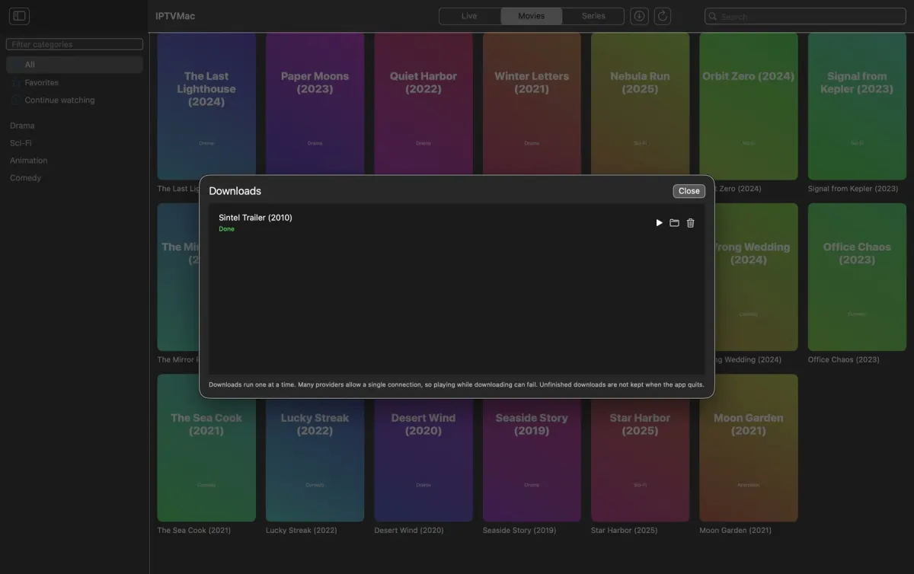
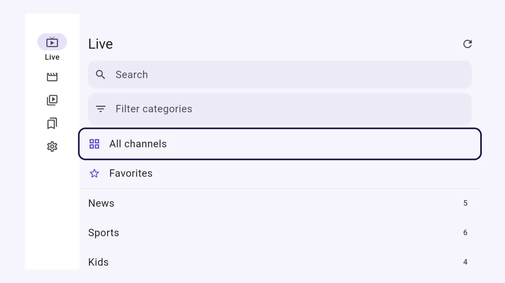

WhatIPTVMacdoes.
A player for your own Xtream Codes and M3U sources, built to be fast, stable and out of your way.


Search, and details, in a blink.

Search that keeps up
Your library lives in a local SQLite database with full-text search, so results appear as you type, in well under a second for 100,000 items. Search inside a category, inside a section or everywhere; Hebrew, Arabic and Latin text all work.
Details for movies and series
Poster, year, rating, duration, genre, plot, director, cast and a trailer link, from your Xtream provider. Open them before you play, or while you watch without stopping the picture.
Favorites and continue watching
Favorites, a continue-watching row and every category with its count. The list remembers where you were when you come back.
A player that does not give up.
A player that does not give up
Playback runs on mpv. It plays the broken TS and HLS streams that trip up system players, reconnects when a stream drops and uses hardware decoding.
Speed, subtitles, audio tracks
Speed from 0.25x to 4x on movies, episodes and catch-up, embedded and external subtitles, audio track choice, a sleep timer from 15 minutes to 2 hours and a skip step you set.
Picture in Picture
On the Mac, IPTVMac's own floating window stays on top of other apps and follows you across Spaces. On Android, the system Picture in Picture window.
Platforms: MacAndroid
Catch-up and program guide
Where your Xtream provider supports them: what is on now and next, and watching a program that already aired. A Live button jumps back to the current broadcast.
A quality tag
A small 4K, FHD, HD or SD tag next to the title, taken from the real size of the picture being played.
Next episode, automatically
When an episode ends, the next one starts after a 5-second countdown. You can turn it off.
Seek preview
Hover the progress bar and a small window shows the picture at that moment. It is always on for downloaded files and optional for streams.
Platforms: Mac
Touch gestures
Double-tap to skip, swipe for volume and brightness, long-press for 2x, and a button to rotate the screen.
Platforms: Android
Made for the remote
Arrows move, OK selects, Back goes up one level and holding Back closes the app. Up and Down change the channel in the player, and the media keys work.
Platforms: Android TV
Made for the keyboard and mouse
Space pauses, the arrows seek, Up and Down and the wheel change the volume, F fills the screen, Esc steps back, Page Up and Page Down change the channel. A click pauses, a double click fills the screen, and the pointer hides while you watch.
Platforms: Windows
Your whole library, kept tidy.

Several playlists, one library
Add as many Xtream Codes and M3U sources as you like, switch between them, or choose All playlists to search, favorite and continue watching across every one.
Subscription expiry
Settings shows when each Xtream subscription ends and how many days are left, when your provider shares it: orange in the last week, red once it ended.
Sync progress
While a playlist syncs, the status line shows how far it is, in percent.
Platforms: Android
Downloads for offline
Download movies and episodes (whole seasons on Xtream series) to watch without a network. On Windows they go to a folder of their own inside your Downloads folder, and they download while the app is open.
Platforms: MacWindowsAndroid
Backup and restore
Playlists without passwords, favorites and history, in one file you can move to another device.
Keep it tidy
Hide categories by words and refresh playlists automatically, or when you choose.
Everywhere, and yours.

31 languages
The whole interface in 31 languages, including right-to-left Hebrew and Arabic, generated from the same strings on every platform.
Light and dark
Follows your system or your choice.
No account, no ads, no tracking
Nothing is sent to the developer. The app talks only to the servers you add, and to GitHub to check for updates. The source code is public.
Written for each platform
Swift and SwiftUI on Mac and iPhone; Dart with Flutter on Windows, Android and Android TV, with a small C++ shell on Windows and a Kotlin layer on Android. The video on every one is decoded by the same compiled libmpv engine.
Updates
The Mac app updates itself, verifying each update with a signature. The Windows and Android apps show a banner when a new version is out and you install it yourself.
Platforms: MacWindowsAndroid